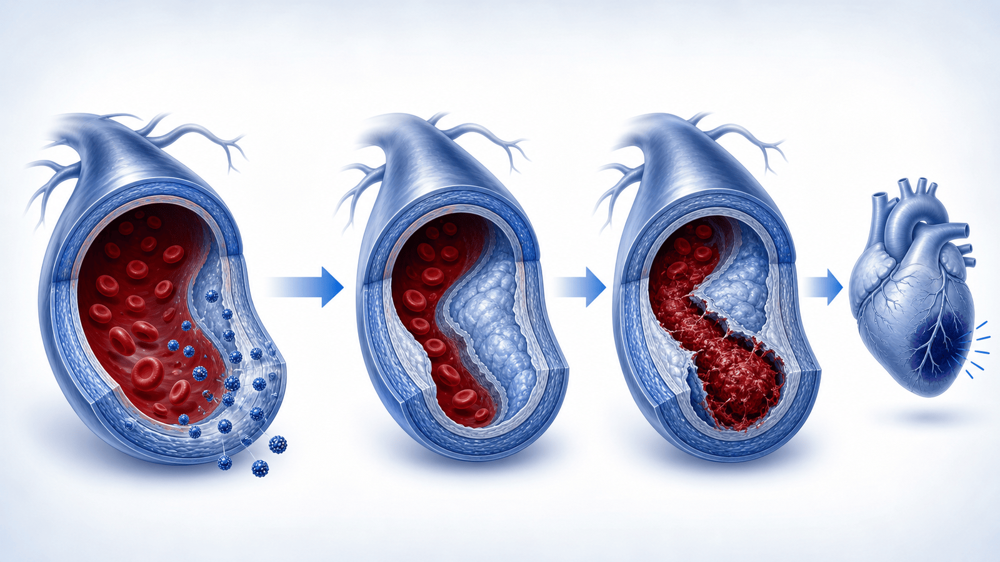
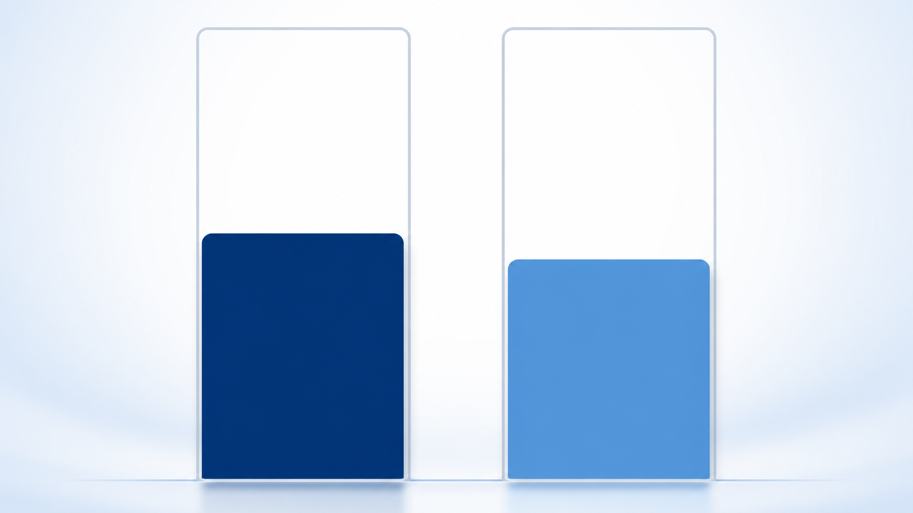

콜레스테롤이 정상인데
왜 심장이 위험할까요?
잘 알려지지 않은 심혈관 위험인자 — 지질단백질(a), 즉 Lp(a) 이야기
Lp(a)가 무엇인가요
나쁜 콜레스테롤(LDL)에 끈끈한 단백질이 한 겹 더 붙은, 특별한 형태의 지질입니다
Lp(a)는 LDL 입자에 아포(a)라는 끈끈한 단백질이 추가로 붙어 있는 형태로, 혈관에 더 잘 들러붙고 혈전과도 관련됩니다.
보통의 콜레스테롤 검사(LDL·HDL·중성지방)에는 나오지 않아 따로 측정해야 알 수 있습니다. 농도는 주로 타고난 유전으로 정해져 평생 비교적 일정하며, 식사·운동으로는 크게 바뀌지 않습니다. 그래서 "콜레스테롤은 정상인데 심장병이 일찍 온" 경우의 숨은 원인이 되기도 합니다.
왜 위험할까요
VESALIUS-CV 연구에서 Lp(a)가 높을수록 심장 혈관 사건이 늘었습니다

누구를, 얼마나 오래 관찰했나요
아직 심근경색·뇌졸중을 겪지 않은 고위험군에서 Lp(a)를 측정해 추적했습니다
콜레스테롤 강하 치료의 효과
강력한 LDL 강하 주사제(에볼로쿠맙)는 두 그룹 모두에서 심장 사건을 줄였습니다

"Lp(a)가 높으면 약 효과가 더 좋다"고 말할 수 있을까요
숫자만 보면 그래 보이지만, 통계적으로는 아직 단정할 수 없습니다
한 명의 사건을 막기 위해 치료가 필요한 인원(NNT)은 Lp(a) 높은 그룹 약 28명, 낮은 그룹 약 40명으로 차이가 있어 보였습니다.
하지만 두 그룹의 효과 차이가 우연이 아니라고 보기엔 통계가 충분하지 않았습니다 (상호작용 p=0.45, 절대감소 차이 p=0.09 — 모두 유의 기준 미달). 게다가 이 분석은 미리 정해 둔 하위그룹 가설탐색이며, Lp(a)를 직접 낮춰 사건이 줄었는지를 본 연구도 아닙니다. 그래서 "Lp(a) 높은 사람만 약효가 좋다"고 단정하지 않습니다.
오늘 꼭 기억할 점
Lp(a)는 한 번 알아두면 평생 도움이 되는 위험 정보입니다
심장을 지키는
한 걸음 더
Lp(a) 검사·심혈관 위험 관리에 대해 궁금한 점이 있으시면 언제든 문의해 주세요
광교중앙로 298, 4층
5대암 검진
같은 자료를 다시 볼 수 있어요